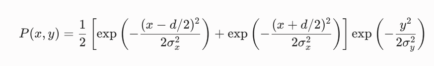
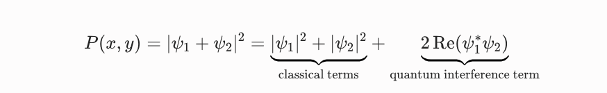
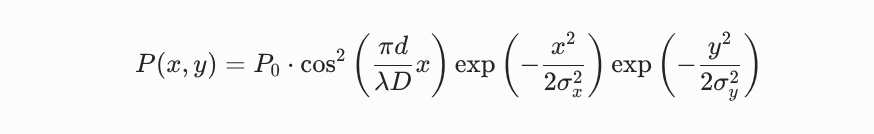

Experimentul cu doua fante
Setup-ul constă dintr-o sursă monocromatică ce emite particule individuale către un paravan opac prevăzut cu două fante nanometrice paralele, în spatele căruia un ecran detector bidimensional înregistrează poziția de impact a fiecărui eveniment.
Fizica clasica prezice ca distributia de pe ecran ar fi suma contributiilor de la doua fante

Formalismul cuantic ne invata ca pana atinge ecranul electronul e descris ca o suprapunere de doua stari, cea corespunzatoare fantei in dreapta si cea corespunzatoare fantei in stanga, iar "masurarea" se produce in momentul cand atinge ecranul si starea sa "colapseaza" intr-un punct.


Vom simula acest proces folosind metoda MNonte Carlo, care ne permite sa generam numere aleatoare conform unei distribtuii date (in cazul nostru, P(x,y))